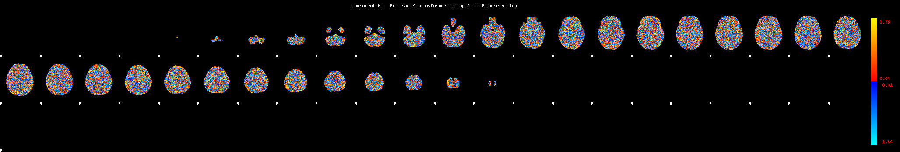
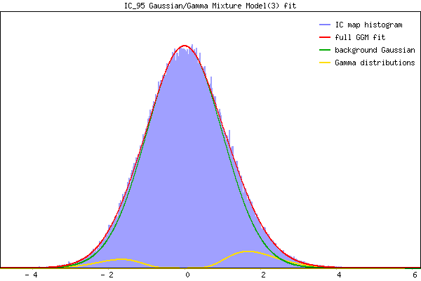

IC_95 Mixture Model fit
Means : 0.000000 1.927073 -1.860526
Vars : 1.000000 0.486555 0.369387
Prop. : 0.932910 0.045955 0.021134
This page produced automatically by MELODIC Version 3.15 - a part of FSL - FMRIB Software Library.